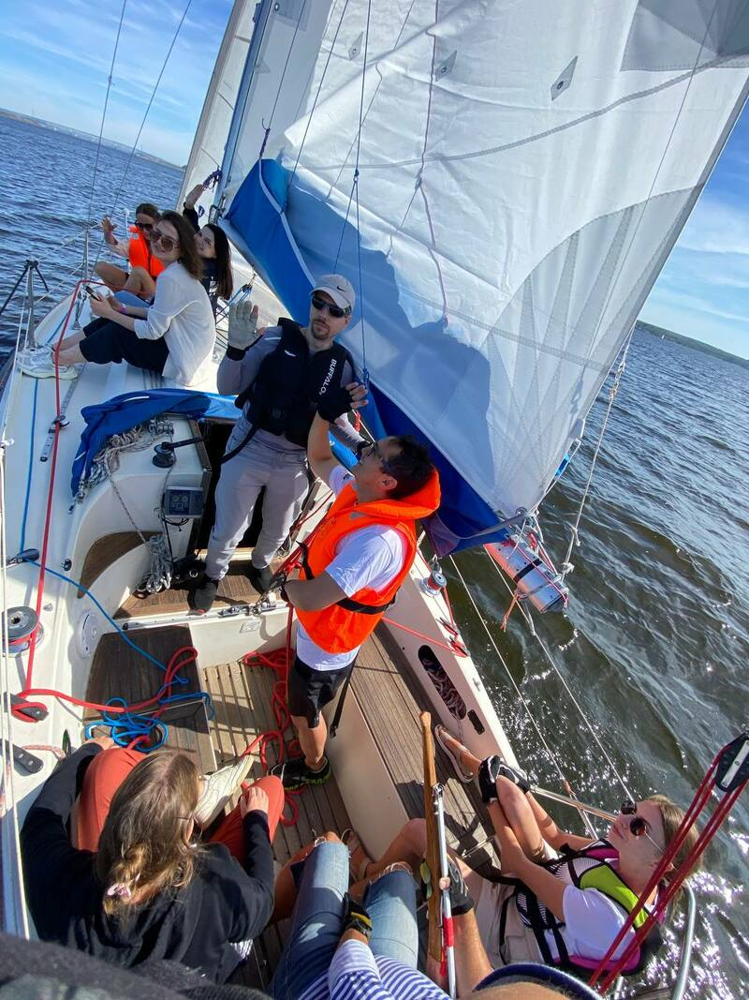

Про выигрыш и победу

Не так давно у нас был корпоратив. Основным гвоздём программы был яхтинг, а точнее даже "парусная регата". Происходило данное мероприятие недалеко от мыса "Стрелка" и КамГЭС, задача была достаточно простая - подойти к бую, на парусном вооружении, от него пройти до буя на противоположном берегу у мыса "Стрелка", обогнуть его и вернуться обратно за минимально возможное время. Всех участвующих разделили на 14 команд и распределили путём жребьёвки по семи яхтам в два захода. Я в числе прочих своих сослуживцев оказался на небольшой 27-ми футовой яхте "Family", познакомился со шкипером и его дочерью (крайне душевные ребята), сообщил, что в яхтенных походах уже бывал и мною могут располагать - отличаю гротофал от стаксель шкота, кранец от кракена, принёс две пары нормальных яхтенных перчаток и вообще, полезный малый.
После 48-ми футовой "Баварии", на которой мне довелось ходить в Греции (кстати, называлась она "Unicorn", прямо как компания, в которой я сейчас работаю) "Family" показалась крохотной, поэтому единственного сослуживца я поставил на правый стаксель шкот, чтобы при галсах по команде "отпускай" травил, а по команде "тяни" - выбирал, сам управлялся с левым стаксельшкотом, гротофалом и закруткой стакселя, одним словом - работа "не бей лежачего", а сослуживицы изображали шпроты на палубе и частично осели в кокпите.
И вот, выходим мы к бую, стартуем от него по команде из рации и начинаем отставать с самого старта. В ходе непринуждённой беседы выяснилось, что у нас единственная в этом мероприятии морская яхта, она короче на три фута и тяжелее, а остальные яхты - спортивные, заточенные в первую очередь на скорость, а не на надёжность, что наша яхта мне ровестница и построена была в 1985-м году, что дочь шкипера ходит с ним с 4-х лет, а сам он - с 14-ти...
Но яхта - это всё-таки яхта. Смотришь вдаль, ловишь ветер в лицо, судно немного покачивает, а ты уже привычно будто подвешен в пространстве центра мира, который плавно движется вокруг тебя. Одним словом - медитация и расслабление. Периодически судно ложится на новый галс, ты быстро выполняешь команды шкипера и снова погружаешься в тоже состояние - мерное покачивание, ветер, приятная неспешная беседа с умными людьми. Немного постоял за румпелем, поразился тому, как отзывчива была "Family" по сравнению с "Баварией", напоминавшей сонного диплодока и реагирующей на штурвал через 2-3 секунды после того, как начинаешь его вращать...
И тут одна из сослуживиц произносит:
С: - Почему мы так сильно отстаём? Мы же так проиграем!
Я: - Неправда, мы выиграем.
С: - Как же мы выиграем, когда все ушли так далеко вперёд? Мы же придём к финишу последними!
Я: - Всё правильно, мы придём к финишу последними, но выиграем.
С: - Это как???
Я: - Очень просто. Ты сюда пришла рвать задницу, чтобы кому-то что-то доказать или чтобы хорошо провести время на яхте?
С: - Чтобы хорошо провести время!
Я: - Ну так те, кто придёт к финишу первыми на полчаса меньше времени проведут на яхте. Кто же в этой ситуации выиграет?
С: - Об этом я как-то не подумала. Наверное поэтому ты и директор...
P.S.: Большое спасибо команде яхты "Family" - день и правда был чудесный.
Теги: жизненное